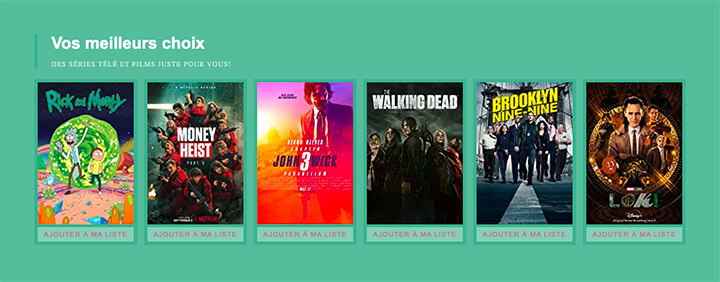

Pour cet exercice, vous héritez d’un projet déjà entamé. Vous devez compléter le travail commencé afin d’obtenir un résultat similaire à la capture d’écran ci-dessous.
Aperçu du résultat 👇
style.scss utilise cette partial, sinon aucune de vos modifications ne sera visible.
Ajoutez une couleur de fond correspondant à votre couleur primaire (primary) se trouvant dans votre partial _variables.scss.
Ajoutez une marge intérieure et extérieure de 5px à chaque carte.
Le bouton de la carte doit prendre toute la largeur de la carte, avoir une marge intérieure verticale de 5px ↕️ et ne pas avoir de bordure.
Utilisez le module de couleur de SASS afin de donner une couleur de fond 15% plus pâle que votre couleur primaire à votre bouton.
Au survol de votre bouton, faite en sorte que sa couleur de fond soit 25% plus pâle que votre couleur primaire.
Complétez le bouton en changeant sa couleur de texte de sorte qu'elle soit de la couleur complémentaire à la couleur primaire.
Utilisez la mixin "small-cap" se trouvant de le fichier _text.scss afin de faire afficher en petites majuscules le texte du bouton.
_text.scss afin de faire afficher en petites majuscules le texte de la description de cette section.
Modifiez la couleur de votre variable $primary et admirez l'impact sur votre page.
Modules
Modulariser chaque composante en fichiers individuels
Module de couleurs
Sass offre des modules built-in dont le module de couleurs
Nomenclature BEM
Nomenclature CSS: Block, Element, and Modifier